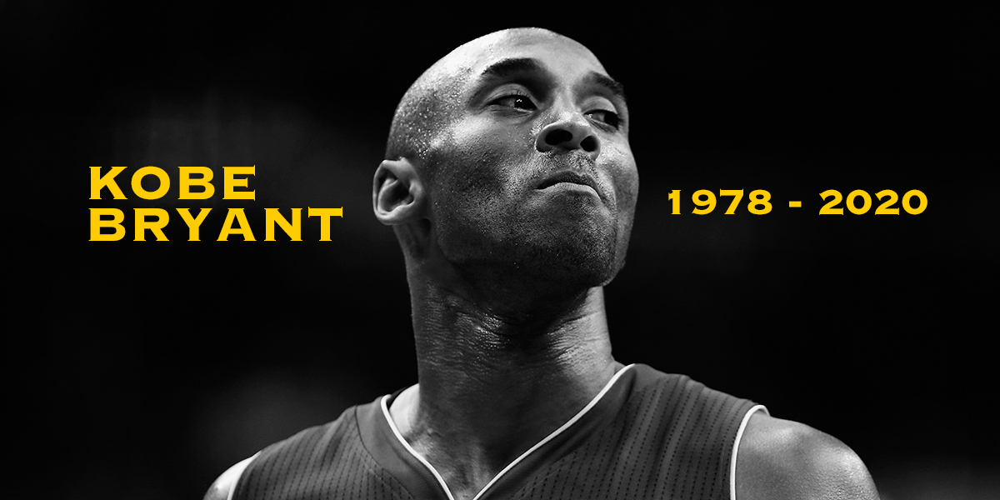

Kobe Bryant, in full Kobe Bean Bryant, (born August 23, 1978, Philadelphia, Pennsylvania, U.S.—died January 26, 2020, Calabasas, California), American professional basketball player, who helped lead the Los Angeles Lakers of the National Basketball Association (NBA) to five championships (2000–02 and 2009–10). Bryant’s father, Joe (“Jelly Bean”) Bryant, was a professional basketball player who spent eight seasons in the NBA and eight more playing in Italy, where Bryant went to school. When his family returned to the United States, Bryant played basketball at Lower Merion High School in Ardmore, Pennsylvania, where he received several national Player of the Year awards and broke the southeastern Pennsylvania scoring record set by Wilt Chamberlain with 2,883 points. Bryant opted to forgo college and declared himself eligible for the NBA draft when he graduated from high school. The Charlotte Hornets chose him with the 13th pick of the 1996 draft. He was traded to the Lakers shortly thereafter and became the second youngest NBA player in history when the 1996–97 season opened. He quickly proved his merit with the Lakers and was selected for the NBA All-Star Game in just his second season, becoming the youngest All-Star.
Bryant was forced to share the role of the Lakers’ star player with his popular and talented teammate Shaquille O’Neal. The two had an uneasy relationship, but they found success under the leadership of Phil Jackson, who became coach of the Lakers in 1999. Bryant, a shooting guard, and O’Neal, a centre, meshed into a remarkably effective combination, and, by the time Bryant was 23, the Lakers had won three consecutive NBA championships.
After winning their third title in 2002, Bryant and the Lakers encountered difficulties. In the 2003 playoffs the Lakers were defeated in the second round. Several months later Bryant was accused of raping a young woman in Colorado. He maintained his innocence, and all charges were eventually dropped when the woman refused to testify after a monthslong campaign of harassment by fans of Bryant and some members of the media. (Bryant later apologized, admitting that he realized his accuser did not believe their sexual encounter was consensual, and a civil suit was settled in 2005.) The incident greatly tarnished his image. Led by Bryant, the Lakers returned to the finals in 2004, but they were upset by the Detroit Pistons. O’Neal subsequently was traded, and Bryant emerged as the team’s sole leader.
Kobe Bryant
“Everything negative – pressure, challenges – is all an opportunity for me to rise”